Quy trình & Chuyển giao
kiến tạo dòng chảy giá trị bền vững
Một cẩm nang chuyên sâu, định hình tư duy thực chiến về các khung làm việc (delivery frameworks), văn hoá vận hành (operations culture) và cơ chế phát hành (release mechanics). Giúp đội ngũ lập trình loại bỏ các khẩu hiệu sáo rỗng, giải quyết triệt để nút thắt cổ chai và thống nhất ngôn ngữ chung từ code lên đến cấp quản trị.
Một đội ngũ phát triển có thể viết code rất chắc tay, nhưng vẫn phát hành sản phẩm chậm chạp, gặp sự cố liên miên, quy trình on-call mơ hồ và tranh cãi vô tận về quy trình. Trong phần lớn trường hợp, nút thắt không nằm ở trình độ lập trình mà nằm ở ngôn ngữ và cơ chế phối hợp (coordination mechanics).
Tài liệu này không định nghĩa lý thuyết suông. Nó phân tách rõ rệt 3 tầng: Tầng Nhịp điệu (Cadence), Tầng Văn hoá Vận hành (Operations Culture) và Tầng Kỹ thuật Chuyển giao (Release Mechanics), giúp bạn định vị chính xác vấn đề nằm ở đâu và áp dụng giải pháp nào.
Bản đồ phân tách: Quy trình nằm ở tầng nào?
Để cuộc thảo luận quy trình không bị chồng chéo, hãy phân chia các khái niệm theo 3 tầng rõ rệt dưới đây:
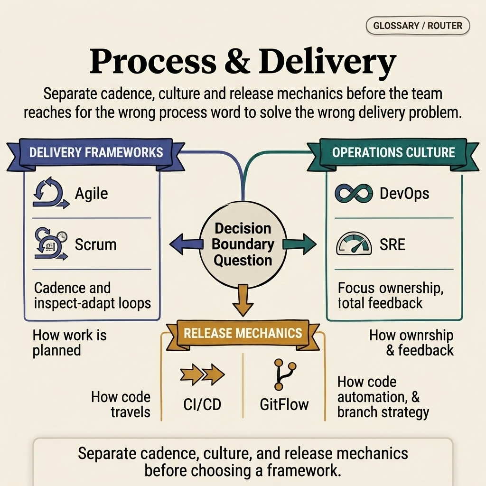
Bộ lọc triệu chứng nhanh — "Bị đau ở đâu, sửa ở đó"
Đừng ném mọi vấn đề của quy trình vào một giỏ duy nhất. Hãy sử dụng bảng tra cứu triệu chứng dưới đây để điều hướng nhanh đến giải pháp phù hợp:
| Triệu chứng thực tế của đội ngũ | Vấn đề cốt lõi ở tầng nào | Giải pháp phù hợp nhất |
|---|---|---|
| Mất 6 tháng viết spec, build xong demo thì khách hàng không cần nữa. | Triết lý quy trình (Agile) | Rút ngắn vòng lặp phản hồi, chuyển từ Plan-driven sang Build-Learn-Adapt. |
| Lập trình viên và quản lý không thống nhất được nhịp điệu, retro hình thức, Story bị carry-over quá nhiều. | Nhịp điệu phối hợp (Scrum) | Xây dựng Definition of Done (DoD) chuẩn hoá, ước lượng dựa trên dữ liệu lịch sử (Velocity). |
| Dev code xong quăng qua tường cho Ops tự deploy. Ops từ chối vì lỗi hệ thống, Dev cãi "chạy tốt trên máy tôi". | Văn hoá vận hành (DevOps) | Thiết lập mô hình "You build it, you run it", xoá bỏ vách ngăn tổ chức bằng tự động hoá. |
| PM muốn ship thật nhiều tính năng. Kỹ sư on-call mệt mỏi vì hệ thống sập liên tục. Tranh cãi chính trị nội bộ. | Đảm bảo tin cậy (SRE) | Dùng chỉ số định lượng SLOs, quản trị bằng Error Budgets và kiểm soát Toil < 50%. |
| Mỗi lần release là một sự kiện đáng sợ kéo dài nhiều tiếng, phải kiểm thử thủ công và rollback bằng tay cực nhọc. | Kỹ thuật chuyển giao (CI/CD) | Xây dựng pipeline tự động hoá hoàn toàn dưới 10 phút, kiểm thử tự động và tự động rollback. |
| Merge conflict liên miên, nhánh develop bị trôi xa khỏi main, bug cũ tái xuất hiện ở bản release mới. | Cơ chế phân nhánh (GitFlow) | Áp dụng phân nhánh có kỷ luật nghiêm ngặt, back-merge hotfixes bắt buộc và so sánh với Trunk-based. |
Agile Philosophy
Agile là một tập hợp các giá trị và nguyên lý cốt lõi (được hệ thống hoá trong Tuyên ngôn Agile - Agile Manifesto, 2001) nhằm thúc đẩy việc chuyển giao giá trị lặp (iterative delivery), liên tục tiếp nhận phản hồi (continuous feedback) và lập kế hoạch thích ứng (adaptive planning). Trái ngược hoàn toàn với việc tuân thủ quy trình cứng nhắc và tài liệu hoá cồng kềnh trước khi thực hiện (Waterfall).
Agile không phải là một phương pháp luận (methodology), mà là một triết lý tư duy (mindset). Scrum, Kanban, XP hay SAFe chỉ là những bộ khung hiện thực hoá triết lý đó. Một đội ngũ tổ chức Daily Standup và Sprint Planning đầy đủ trên Jira chưa chắc đã là Agile nếu họ không thể thích ứng và chuyển giao giá trị thực tế sau mỗi chu kỳ.
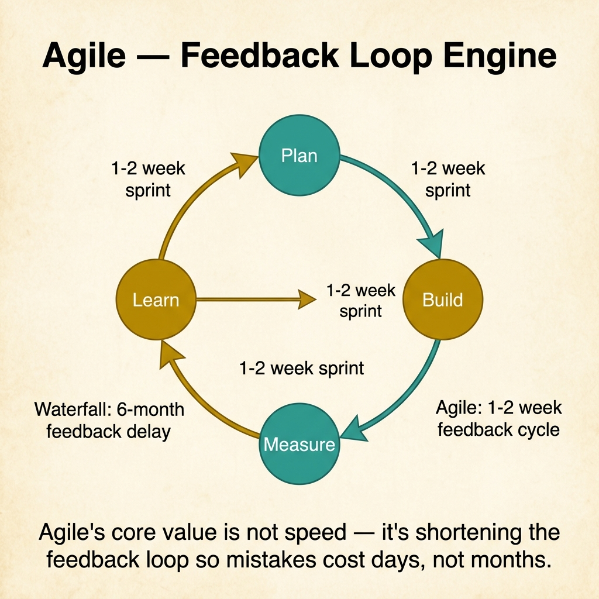
Các biến thể hiện thực hoá phổ biến
| Khung làm việc | Bản chất vận hành | Phù hợp nhất cho | Rủi ro lớn nhất |
|---|---|---|---|
| Scrum | Các Sprint đóng băng khung thời gian (time-boxed) từ 1-4 tuần với các vai trò cố định. | Các đội phát triển sản phẩm cần nhịp điệu ổn định và cấu trúc rõ ràng. | Ceremony overhead (tổn hao vì họp hành) nếu Sprint quá ngắn hoặc thiếu kỷ luật. |
| Kanban | Quản lý dòng chảy liên tục, không có Sprint, giới hạn Work in Progress (WIP limits). | Đội hỗ trợ vận hành (Ops), sửa lỗi liên tục, hoặc các dự án có tính biến động cực cao. | Mất kiểm soát thời gian nếu không áp dụng chặt chẽ WIP limits. |
| XP (Extreme Programming) | Nhấn mạnh thực hành kỹ thuật đỉnh cao: TDD, Pair Programming, Continuous Integration. | Đội ngũ tập trung tối đa vào chất lượng mã nguồn và sự an toàn của hệ thống. | Đài hỏi trình độ và tính kỷ luật tự giác rất cao của kỹ sư. |
Các ví dụ thực chiến
Ví dụ 1.1: Nhận diện Agile thực thụ vs. "Agile hình thức" (Agile-in-name-only)
Một đội ngũ phát triển áp dụng đầy đủ các buổi họp Scrum (Daily Standup mỗi sáng, Sprint Planning 2 tuần một lần). Tuy nhiên, mã nguồn chỉ được deploy lên Production mỗi quý một lần. Mọi thay đổi về yêu cầu giữa chừng đều bị cấm vì "đã khoá scope trong Sprint". Đội ngũ nghĩ rằng mình đang vận hành Agile cực kỳ bài bản.
Tiến hành đánh giá sức khoẻ Agile (Agile health check) dựa trên các giá trị cốt lõi thay vì các nghi thức:
- Working Software: Chuyển dịch từ demo nội bộ sang chuyển giao mã nguồn chạy được lên môi trường thực tế (Staging/Production) tối thiểu sau mỗi 2 tuần.
- Responding to Change: Chấp nhận điều chỉnh Backlog giữa các Sprint nếu dữ liệu thực tế cho thấy tính năng cũ không đem lại giá trị.
- Customer Collaboration: Tổ chức các buổi demo thực tế với người dùng cuối hoặc Stakeholders thật để thu thập phản hồi trực tiếp, thay vì PM tự biên tự diễn.
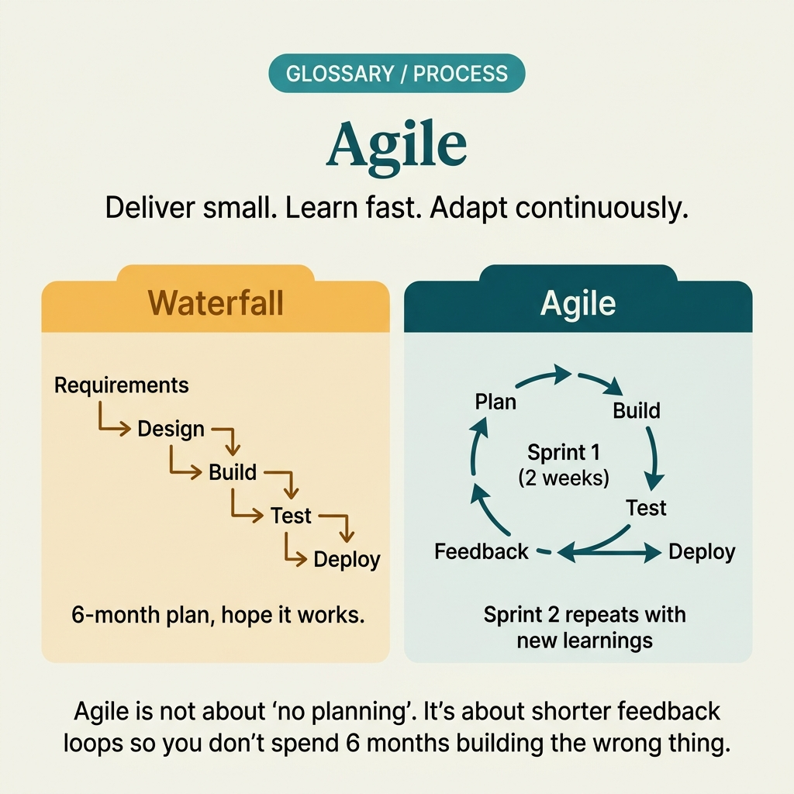
Kết luận: Các nghi thức (standup, planning) chỉ là phương tiện, không phải mục đích. Sức khoẻ Agile của một đội ngũ được đo lường bằng tần suất phản hồi thực tế từ người dùng và khả năng điều hướng phạm vi (scope adaptation).
Ví dụ 1.2: Thiết kế vòng lặp phản hồi đóng để tối ưu hoá tính năng vay tiêu dùng
Đội ngũ phát triển tính năng vay tiêu dùng (lending) muốn tăng tỷ lệ hoàn thành hồ sơ của khách hàng. Tuy nhiên, thay vì phân tích hành vi thực tế, Product Manager đề xuất một bản thiết kế UI hoành tráng kéo dài 2 tháng với giả định giao diện đẹp hơn sẽ giúp tăng chuyển đổi. Rủi ro thất bại và lãng phí nguồn lực cực lớn.
Chuyển đổi sang mô hình phát triển Agile định hướng dữ liệu (Hypothesis-Driven Agile):
- Hypothesis: "Đơn giản hoá bước tải tài liệu thu nhập sẽ tăng 15% tỷ lệ hoàn tất hồ sơ."
- Minimum Viable Step: Phát triển một giải pháp cực kỳ đơn giản (cho phép chụp ảnh bảng lương thay vì bắt buộc tải file PDF) trong vòng 1 tuần và phát hành tới 10% khách hàng (Canary deploy).
- Measure & Learn: Đo lường tỷ lệ rớt (drop-off rate) tại bước này. Kết quả thực tế cho thấy tỷ lệ hoàn tất tăng vọt 20%, xác nhận giả định ban đầu là đúng.
- Adapt: Nhân rộng giải pháp này cho 100% người dùng và đưa các tác vụ tối ưu hoá hình ảnh tải lên vào Sprint tiếp theo. Hủy bỏ kế hoạch vẽ lại toàn bộ UI đắt đỏ.
hypothesis_validation:
feature: "lending_document_upload"
sprint_cycle: "Sprint 14"
metrics:
canary_ratio: 0.10
baseline_dropoff: "58%"
target_dropoff: "< 45%"
actual_dropoff: "38%"
learning:
- "Chụp ảnh trực tiếp loại bỏ ma sát so với việc tìm file PDF"
- "Dung lượng ảnh tải lên quá lớn gây chậm trễ cho mạng 3G"
action_plan:
- "Nén ảnh phía Client trước khi upload (Sprint 15)"
- "Huỷ bỏ kế hoạch thiết kế lại UI tổng thể (Tiết kiệm 6 tuần công sức)"Kết luận: Agile lặp trung thực giúp đội ngũ không phí phạm công sức xây dựng những hệ thống phức tạp dựa trên những giả định sai lầm. Dữ liệu thực tế từ Production là thước đo duy nhất cho tính đúng đắn của thiết kế.
Ví dụ 1.3: Ứng dụng mô hình Cynefin để xác định ranh giới áp dụng Agile
Ban giám đốc một tập đoàn tài chính lớn ra chỉ thị: "Bắt buộc 100% dự án công nghệ của tập đoàn phải chạy theo mô hình Agile/Scrum". Hậu quả là dự án di trú lõi thanh toán (Core Banking Migration) cực kỳ phức tạp nhưng yêu cầu cố định 100% theo luật pháp cũng bị cuốn vào vòng xoáy. Đội ngũ liên tục họp hành, chia nhỏ Sprint vô nghĩa trong khi ngày Golive cố định không thể dịch chuyển.
Sử dụng khụng phân tích Cynefin Framework để đánh giá bản chất dự án và chọn mô hình quản trị phù hợp:
- Complex Domain (Phức tạp - Không biết rõ nguyên nhân-kết quả): Các dự án phát triển sản phẩm mới, xây dựng tính năng tăng trưởng. ➔ Áp dụng Agile/Scrum triệt để để dò đường bằng thực nghiệm.
- Complicated Domain (Phức hợp - Cần chuyên gia phân tích kỹ): Dự án di trú cơ sở dữ liệu lớn, tích hợp Core Banking theo chuẩn ISO8583 cố định. ➔ Áp dụng Plan-Driven (Milestone-based) kết hợp với kiểm thử tự động cực mạnh. Việc lặp đi lặp lại để khám phá yêu cầu ở đây là vô nghĩa vì yêu cầu đã được cố định rõ ràng.
| Miền Cynefin | Bản chất hệ thống | Cách phản ứng | Mô hình phù hợp |
|---|---|---|---|
| Complex (Phức tạp) | Không thể dự đoán trước. Chỉ biết kết quả sau khi làm. | Probe (Thử) ➔ Sense (Cảm nhận) ➔ Respond (Phân ứng) | Agile / Scrum / Kanban |
| Complicated (Phức hợp) | Có thể phân tích được bởi chuyên gia. Yêu cầu rõ ràng. | Sense (Cảm nhận) ➔ Analyze (Phân tích) ➔ Respond (Phản ứng) | Plan-driven / Waterfall lai với Agile Engineering |
| Simple (Đơn giản) | Quy trình chuẩn hoá, lặp đi lặp lại. | Sense (Cảm nhận) ➔ Categorize (Phân loại) ➔ Respond (Phản ứng) | Runbook / Standard Operating Procedures (SOP) |
Kết luận: Agile không phải là viên đạn bạc cho mọi bài toán. Tư duy cấp Expert là biết tách biệt: Áp dụng Agile Planning cho những vùng dự án nhiều ẩn số (Complex), và giữ vững Agile Engineering (CI/CD, Auto testing) nhưng lập kế hoạch theo cột mốc cứng (Plan-driven) cho những vùng dự án cố định yêu cầu (Complicated).
Scrum Framework
Scrum là một bộ khung làm việc (framework) gọn nhẹ, hiện thực hoá triết lý Agile thông qua việc chia nhỏ quá trình phát triển thành các chu kỳ cố định gọi là Sprints (1-4 tuần). Khung này quy định chặt chẽ 3 vai trò cốt lõi (Product Owner, Scrum Master, Development Team), 5 sự kiện chính và 3 tạo tác (artifacts) nhằm tạo ra các phần tăng trưởng sản phẩm hoàn chỉnh, chạy được và có thể bàn giao (potentially shippable increments).
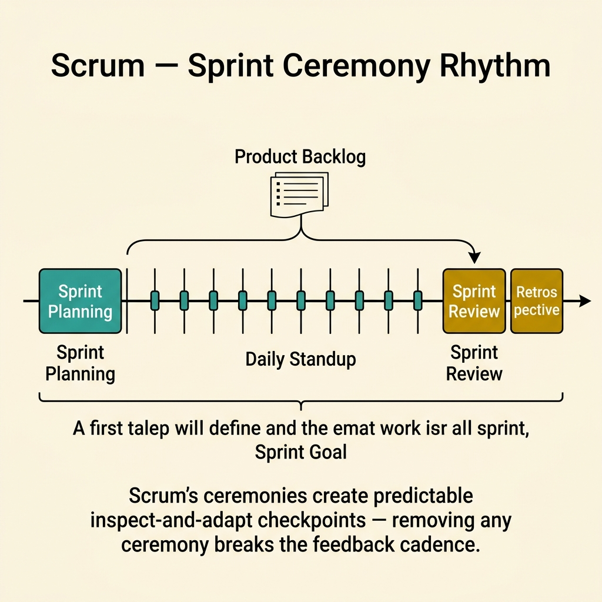
Bộ ba vai trò cốt lõi trong Scrum
Product Owner (PO)
Chịu trách nhiệm tối đa hoá giá trị sản phẩm. Sở hữu và ưu tiên Product Backlog. Định nghĩa cái gì (What).
Scrum Master (SM)
Đảm bảo đội ngũ hiểu và vận hành trơn tru theo Scrum. Loại bỏ các trở ngại (impediments) cho Dev team.
Development Team
Nhóm tự tổ chức, đa chức năng sở hữu toàn bộ quá trình hiện thực hoá code. Định nghĩa làm như thế nào (How).
Các ví dụ thực chiến
Ví dụ 2.1: Triệt tiêu trạng thái "Hoàn thành 80%" bằng Definition of Done (DoD) chuẩn hoá
Tại cuối mỗi Sprint, các lập trình viên thường báo cáo: "Story này em làm xong 80% rồi, chỉ còn thiếu viết unit test và deploy lên Staging". Kết quả là khi tổng kết Sprint, không có bất kỳ Story nào thực sự chạy được. Công việc mang nợ kỹ thuật (technical debt) khổng lồ tràn sang Sprint tiếp theo (carry-over).
Thống nhất và ban hành một bảng Definition of Done (DoD) rõ ràng, nhị phân (chỉ có Đạt hoặc Không Đạt), không chấp nhận tỷ lệ phần trăm:
definition_of_done:
code_quality:
- "Mã nguồn đã qua review bởi ít nhất 1 Senior Developer"
- "Không có lỗi nghiêm trọng từ SonarQube (Quality Gate passed)"
testing:
- "Unit test bao phủ tối thiểu 80% các dòng code mới"
- "Integration test chạy tự động thành công trên môi trường test"
deployment:
- "Mã nguồn được merge vào nhánh develop qua PR tự động"
- "Đã deploy thành công lên môi trường Staging và chạy Smoke test thành công"
signoff:
- "Product Owner đã trực tiếp kiểm chứng và ký duyệt chấp nhận Story"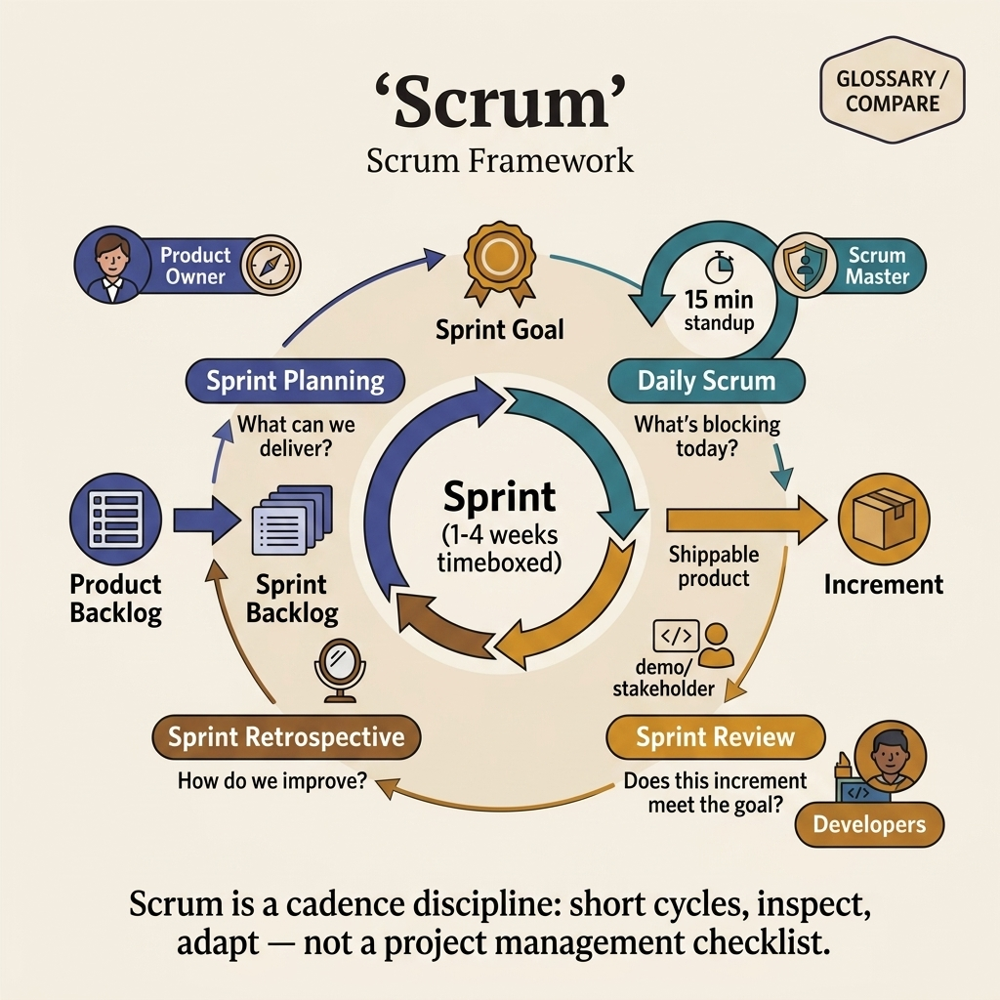
Kết luận: Không có khái niệm "Xong 80%". Một công việc hoặc là hoàn thành đầy đủ theo tiêu chuẩn DoD để có thể ship, hoặc là chưa hoàn thành và tính Velocity bằng 0 điểm cho Story đó trong Sprint.
Ví dụ 2.2: Lập kế hoạch Sprint (Sprint Planning) thực tế dựa trên dữ liệu lịch sử
Một đội ngũ phát triển thường xuyên bị trượt mục tiêu Sprint (Sprint Goal). Tại mỗi buổi Planning, dưới áp lực của PM, đội ngũ luôn cam kết thực hiện 40 Story Points (điểm câu chuyện), mặc dù dữ liệu thực tế lịch sử cho thấy họ chưa bao giờ hoàn thành quá 25 points trong một Sprint.
Chuyển đổi quy trình Sprint Planning sang mô hình dự báo dựa trên năng lực thực tế (Capacity-based Forecasting):
- Tính toán Velocity lịch sử: Lấy trung bình số điểm hoàn tất thực tế của 3 Sprints gần nhất (ví dụ: 22, 25, 23 points ➔ Trung bình 23.3 points).
- Điều chỉnh theo Capacity thực tế của Sprint hiện tại: Đội ngũ có 5 người, nhưng có 1 Senior Dev xin nghỉ phép 5 ngày trong Sprint này ➔ Giảm 20% năng lực hoạt động. Target points điều chỉnh = 23.3 × 80% ≈ 18 points.
- Lựa chọn Backlog tương ứng: Chỉ kéo các Story có tổng số điểm tối đa 18 points vào Sprint Backlog. Đánh dấu các Story tiếp theo là "Stretch Goals" (mục tiêu mở rộng, chỉ làm nếu xong sớm) và tuyệt đối không đưa vào cam kết cứng.
| Sprint | Điểm cam kết ban đầu | Điểm hoàn thành thực tế (DoD) | Tỷ lệ hoàn thành |
|---|---|---|---|
| Sprint N-3 | 40 Points | 22 Points | 55% (Thất bại mục tiêu) |
| Sprint N-2 | 38 Points | 25 Points | 65% (Thất bại mục tiêu) |
| Sprint N-1 | 42 Points | 23 Points | 54% (Thất bại mục tiêu) |
| Sprint N (Áp dụng mới) | 18 Points (Cam kết thực tế) | 18 Points (Dự kiến hoàn thành) | 100% (Đạt mục tiêu) |
Kết luận: Velocity là một công cụ để dự báo và lập kế hoạch, không phải là một thước đo hiệu suất (performance KPI) dùng để ép uổng đội ngũ. Cam kết vượt quá năng lực thực tế chỉ tạo ra ảo ảnh và sự mệt mỏi tinh thần cho lập trình viên.
Ví dụ 2.3: Thiết kế cơ chế cải tiến Retrospective đo lường được (Compound Improvement Loop)
Buổi họp Sprint Retrospective (Cải tiến sau Sprint) biến thành một buổi than vãn, kể khổ vô thưởng vô phạt. Đội ngũ đưa ra các cam kết rất mơ hồ như: "Chúng ta cần giao tiếp tốt hơn", hoặc "Chúng ta cần viết code cẩn thận hơn". Sau 5 Sprints, không có bất kỳ thay đổi tích cực nào được hiện thực hoá và lập trình viên cảm thấy buổi họp rất tốn thời gian.
Áp dụng nguyên tắc Cải tiến dựa trên giả thuyết và thực nghiệm (Actionable Experimentation) tại Retrospective:
- Observation (Quan sát lỗi): "Chúng ta mất quá nhiều thời gian chờ đợi phản hồi PR (Pull Request), gây trễ hạn Story."
- Hypothesis (Giả thuyết): "Nếu chúng ta đặt giới hạn thời gian phản hồi PR tối đa là 4 tiếng trong giờ làm việc, chu kỳ hoàn thành Story (Cycle time) sẽ giảm ít nhất 20%."
- Actionable Experiment: Cam kết thực hiện đúng 1 hành động cụ thể trong Sprint tới: Thiết lập Slack Bot tự động ping nhắc nhở các PR chưa được review sau 2 tiếng. Chỉ định 1 thành viên chịu trách nhiệm theo dõi chỉ số.
- Review: Tại buổi Retro của Sprint tiếp theo, lấy dữ liệu Cycle time từ Jira để đối chiếu. Nếu giả thuyết đúng, chính thức đưa quy tắc này vào quy trình hoạt động tiêu chuẩn (Working Agreement).
retro_experiment:
sprint_source: "Sprint 22"
problem: "Thời gian chờ Review PR quá dài (Trung bình 28 tiếng)"
experiment_action:
description: "Cài đặt bot Github Slack integration, tự động nhắc nhở review sau 2 tiếng"
owner: "Kỹ sư trưởng Nam"
target_metric: "Thời gian review PR trung bình < 4 tiếng"
results_in_sprint_23:
actual_pr_review_time: "3.2 tiếng (Đạt mục tiêu)"
impact_on_cycle_time: "Giảm từ 4.2 ngày xuống còn 2.8 ngày (Tăng tốc 33%)"
status: "Chính thức đưa vào Working Agreement của đội ngũ"Kết luận: Sự cải tiến của Scrum không đến từ những khẩu hiệu lớn lao, mà đến từ việc thực nghiệm liên tục những thay đổi nhỏ, đo lường được qua từng Sprint. Hãy bắt buộc mỗi buổi Retrospective chỉ tạo ra đúng 1 hành động cụ thể, có người sở hữu và có tiêu chí đo lường rõ ràng.
DevOps Culture
DevOps là một triết lý văn hoá và kỹ nghệ nhằm xoá bỏ vách ngăn (silos) giữa bộ phận Phát triển phần mềm (Dev) và bộ phận Vận hành hệ thống (Ops). Từ đó thiết lập cơ chế đồng sở hữu sản phẩm (shared ownership), tự động hoá hoàn toàn chuỗi cung ứng mã nguồn, quản lý hạ tầng như mã nguồn (Infrastructure as Code) và thiết lập vòng phản hồi tức thời từ môi trường Production về lại Development.
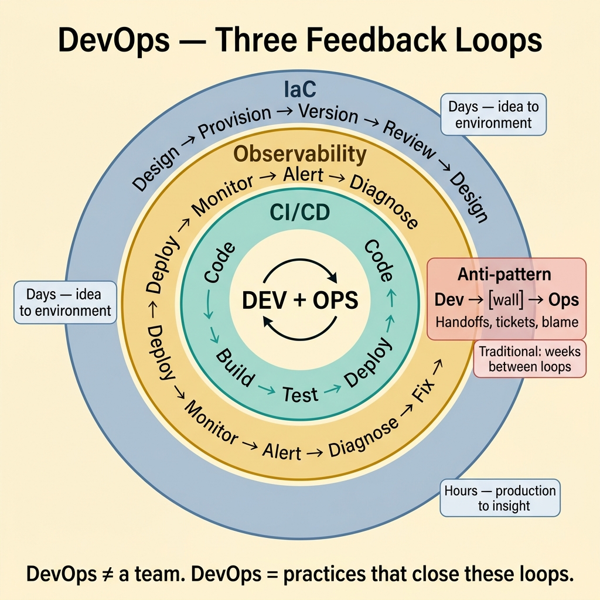
DevOps không phải là tên của một chức danh công việc, một công cụ hay một đội ngũ biệt lập. Một tổ chức thành lập một "Đội DevOps" riêng biệt thực chất thường chỉ đang đổi tên cho đội vận hành cũ và vô tình tạo thêm một vách ngăn thứ ba giữa Dev và Ops. DevOps đích thực là khi người viết ra code cũng tự tin sở hữu cách nó vận hành trên Production.
Ba cột trụ kỹ thuật chống đỡ văn hoá DevOps
CI/CD Automation
Tự động hoá tuyệt đối từ bước build, test đến deploy. Không can thiệp thủ công bằng tay.
Infrastructure as Code
Quản lý toàn bộ máy chủ, mạng, Kubernetes bằng mã nguồn (Terraform, Ansible) có phiên bản và kiểm duyệt qua Git.
Observability & Feedback
Giám sát toàn diện thông qua Metrics, Logs, Traces để lập tức phát hiện và tự động ứng phó với lỗi hệ thống.
Các ví dụ thực chiến
Ví dụ 3.1: Chuyển đổi quản lý hạ tầng thủ công sang Infrastructure as Code (IaC)
Mỗi khi cần dựng một môi trường kiểm thử mới, đội Dev phải tạo một ticket yêu cầu trên Jira. Kỹ sư hệ thống (Ops) sẽ đọc ticket, click chuột thủ công trên giao diện Web Console của AWS để tạo EC2, RDS, thiết lập bảo mật. Quá trình này mất 3 ngày, thường xuyên bị sai lệch cấu hình giữa môi trường Staging và Production, gây ra lỗi "chạy tốt trên Staging nhưng sập trên Prod".
Mã hoá toàn bộ tài nguyên hạ tầng bằng Terraform. Lưu trữ file cấu hình này trong cùng Repo Git của mã nguồn sản phẩm, cho phép Dev tự tạo môi trường thông qua PR (Pull Request) được duyệt bởi Tech Lead:
# Định nghĩa máy chủ ứng dụng Web cho môi trường Staging
resource "aws_instance" "web_app" {
ami = "ami-0c55b159cbfafe1f0"
instance_type = "t3.medium"
tags = {
Name = "lending-api-staging"
Environment = "Staging"
ManagedBy = "Terraform"
}
}
# Định nghĩa Database PostgreSQL đồng bộ
resource "aws_db_instance" "db" {
allocated_storage = 20
engine = "postgres"
engine_version = "15.4"
instance_class = "db.t3.medium"
name = "lending_db_staging"
username = "db_admin"
password = var.db_password
skip_final_snapshot = true
}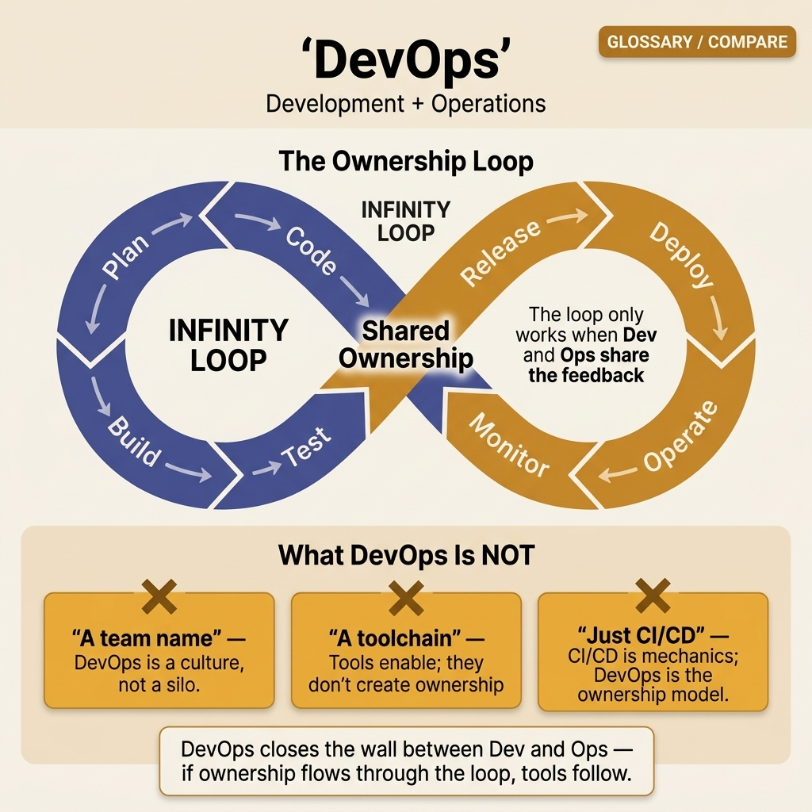
Kết luận: IaC biến việc quản lý máy chủ vật lý phức tạp thành việc viết code. Hạ tầng giờ đây có thể được review, kiểm soát phiên bản và tự động deploy như mã nguồn ứng dụng, triệt tiêu hoàn toàn sự sai lệch môi trường (environment drift).
Ví dụ 3.2: Triển khai triết lý "You build it, you run it" mà không gây kiệt sức (burnout)
Công ty áp dụng chính sách: "Lập trình viên phải trực on-call 24/7 để ứng cứu sự cố hệ thống do chính mình viết ra". Tuy nhiên, do thiếu công cụ hỗ trợ và hệ thống có quá nhiều cảnh báo rác (alert fatigue), lập trình viên liên tục bị đánh thức lúc 3 giờ sáng vì các lỗi không nghiêm trọng, dẫn đến tình trạng kiệt sức tập thể và xin nghỉ việc hàng loạt.
Tái cấu trúc mô hình vận hành và phân chia trách nhiệm lành mạnh giữa Dev Team và Platform Engineering Team:
- Platform Engineering: Tập trung xây dựng các nền tảng tự phục vụ (Self-service platform), tự động hoá khâu giám sát, lọc nhiễu cảnh báo, tích hợp PagerDuty thông minh.
- Lập trình viên: Chỉ nhận cảnh báo on-call khi các chỉ số cốt lõi của người dùng (SLO) bị vi phạm thực sự.
- Toil Budget (Ngân sách tác vụ thủ công): Đảm bảo lập trình viên trực on-call không dành quá 30% thời gian cho các tác vụ lặp đi lặp lại. Nếu vượt quá, Ops Team bắt buộc phải dừng nhận task mới để tập trung viết tool tự động hoá.
| Hoạt động vận hành | Trách nhiệm của Dev Team | Trách nhiệm của Platform Team |
|---|---|---|
| Phát hành mã nguồn | Tự viết code, chạy test, trigger PR tự động deploy. | Maintain hạ tầng CI/CD Runner hoạt động trơn tru. |
| Hạ tầng hệ thống | Khai báo tài nguyên máy chủ bằng file Terraform có sẵn. | Xây dựng các Template Terraform bảo mật chuẩn hóa. |
| On-call & Ứng cứu | Nhận Alert cấp độ P1 ảnh hưởng trực tiếp đến App. | Hỗ trợ hạ tầng mạng, Kubernetes Cluster diện rộng. |
Kết luận: "You build it, you run it" chỉ hoạt động bền vững khi lập trình viên được trang bị đầy đủ công cụ tự phục vụ thông minh và được bảo vệ thời gian bởi Platform Engineering Team. Hạ thấp ma sát vận hành chính là chìa khoá giảm burnout.
Ví dụ 3.3: Định lượng mức độ trưởng thành của quy trình bằng 4 chỉ số DORA
Giám đốc Công nghệ (CTO) muốn biết khoản đầu tư hàng triệu USD vào công nghệ DevOps có thực sự đem lại hiệu quả kinh doanh hay không. Đội ngũ không biết đo lường thế nào ngoài việc báo cáo số lượng Ticket Jira đã đóng - một chỉ số không phản ánh tốc độ và sự an toàn của hệ thống.
Triển khai hệ thống đo lường tự động qua Git và CI/CD để thu thập chính xác 4 chỉ số DORA (DevOps Research and Assessment):
- Deployment Frequency (Tần suất deploy): Đo lường tốc độ đưa giá trị ra thị trường. Ngưỡng Elite: Nhiều lần trong ngày.
- Lead Time for Changes (Thời gian từ commit đến prod): Đo lường độ trễ của quy trình. Ngưỡng Elite: < 1 giờ.
- Change Failure Rate (Tỷ lệ deploy lỗi): Đo lường chất lượng kiểm thử. Ngưỡng Elite: < 5%.
- Mean Time to Restore (Thời gian phục hồi hệ thống): Đo lường năng lực phản ứng sự cố. Ngưỡng Elite: < 1 giờ.
dora_assessment:
team: "core-payment-service"
period: "Q2-2026"
metrics:
deployment_frequency:
value: "14 lần / ngày"
rating: "ELITE"
lead_time_for_changes:
value: "42 phút (từ lúc merge PR đến production)"
rating: "ELITE"
change_failure_rate:
value: "2.4% (chỉ có 3 đợt deploy lỗi nhỏ trên 125 lần deploy)"
rating: "ELITE"
mean_time_to_restore:
value: "18 phút (tự động rollback bằng canary gate)"
rating: "ELITE"
bottleneck_identified: "Công đoạn phê duyệt thủ công của PM tại môi trường UAT là rào cản duy nhất đạt tốc độ tức thì."Kết luận: Chỉ số DORA cung cấp góc nhìn khoa học và định lượng về hiệu quả vận hành của doanh nghiệp. Một đội ngũ giỏi là đội ngũ đạt được điểm số cao ở cả khía cạnh Tốc độ (Speed - Lead time, Frequency) lẫn Độ an toàn (Stability - CFR, MTTR).
Site Reliability Engineering
SRE (Site Reliability Engineering) là một kỷ nghệ được tiên phong bởi Google, nhằm giải quyết các bài toán vận hành hệ thống bằng tư duy của một kỹ sư phần mềm. SRE thiết lập cơ chế quản trị định lượng cực kỳ chặt chẽ thông qua các chỉ số SLIs, SLOs và SLAs, biến sự xung đột giữa "tính năng mới (velocity)" và "độ tin cậy (reliability)" thành một bài toán số học tường minh thông qua khái niệm Error Budgets (Ngân sách lỗi).
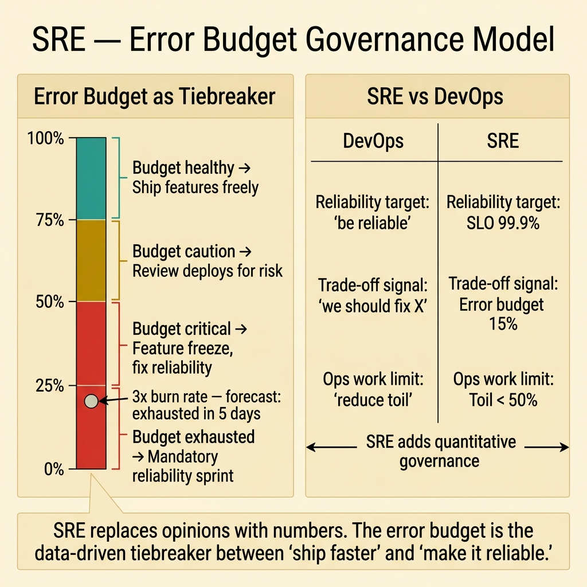
SRE không mâu thuẫn với DevOps. Phát biểu kinh điển của Google định nghĩa rõ mối quan hệ này: class SRE implements Interface DevOps. SRE chính là một cách hiện thực hoá cụ thể của triết lý DevOps, bổ sung thêm các cơ chế ràng buộc số liệu toán học chặt chẽ vào văn hoá làm việc.
Bộ ba khái niệm định lượng cốt lõi trong SRE
SLI (Indicator)
Chỉ số đo lường trực tiếp mức độ hài lòng của người dùng. Ví dụ: Tỷ lệ request thành công (%).
SLO (Objective)
Mục tiêu chất lượng dịch vụ mà đội ngũ cam kết đạt được nội bộ. Ví dụ: Availability > 99.9%.
SLA (Agreement)
Cam kết pháp lý với khách hàng cuối, kèm theo chế tài phạt tiền nếu vi phạm. Thường lỏng lẻo hơn SLO.
Các ví dụ thực chiến
Ví dụ 4.1: Xây dựng bộ chỉ số SLI/SLO đầu tiên cho API thanh toán
Đội ngũ vận hành API thanh toán tuyên bố: "Hệ thống của chúng ta hoạt động hoàn hảo 100%". Tuy nhiên, khách hàng liên tục phàn nàn trên mạng xã hội rằng họ phải chờ hơn 5 giây để thanh toán hoàn tất, gây ảnh hưởng nghiêm trọng đến trải nghiệm. Đội ngũ không có cách nào tự động đo lường sự thất vọng này.
Thiết lập chỉ số SLI và mục tiêu SLO định hướng theo trải nghiệm người dùng cuối:
- SLI 1 (Availability):
Tỷ lệ HTTP status code không phải 5xx / Tổng số request nhận được. - SLO 1 (Availability Target): Đạt tối thiểu 99.9% thành công tính trên chu kỳ 30 ngày cuốn chiếu (rolling window). Điều này cho phép tối đa 43 phút lỗi trong 1 tháng.
- SLI 2 (Latency):
Tỷ lệ request có phản hồi < 500ms / Tổng số request nhận được. - SLO 2 (Latency Target): Đạt tối thiểu 95% trong chu kỳ 30 ngày.
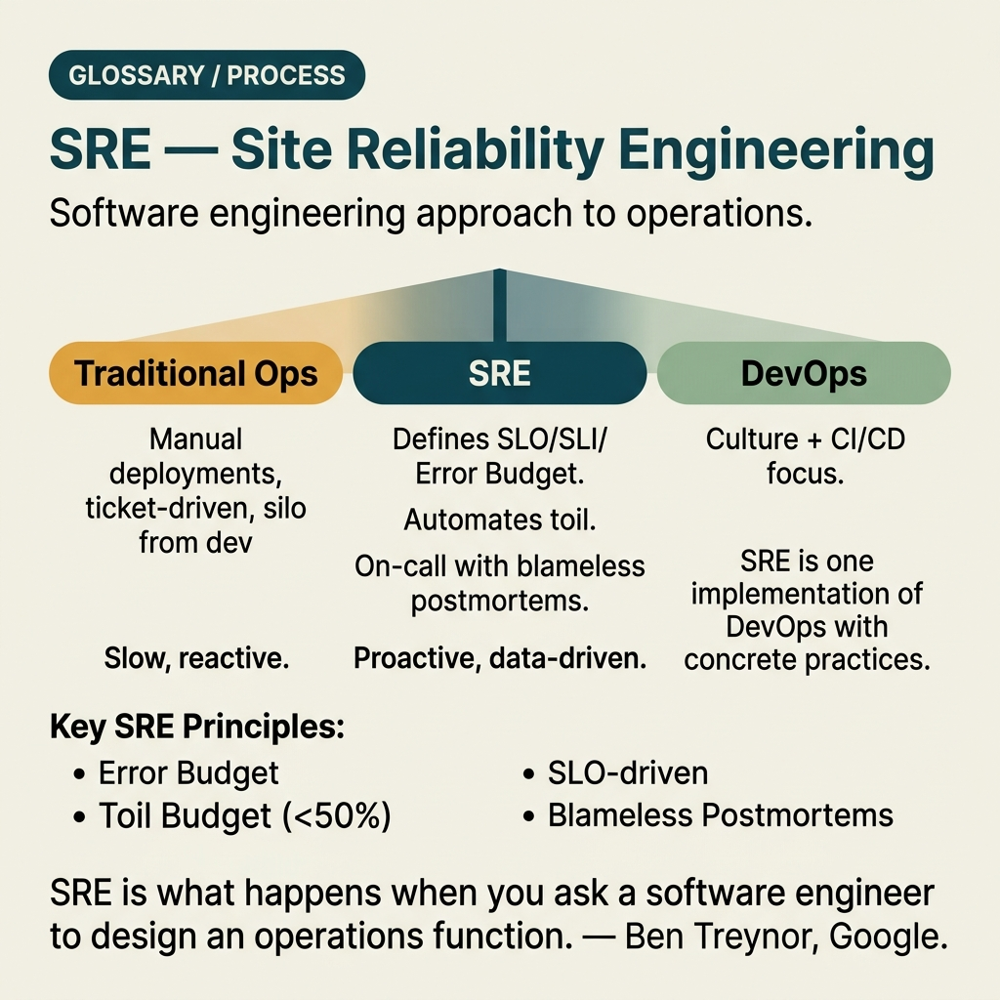
Kết luận: SLO phải được xây dựng dựa trên sự chịu đựng của người dùng, không phải dựa trên sự kiêu hãnh của kỹ sư. Đặt mục tiêu quá cao (ví dụ: 99.999% trong khi hạ tầng không cho phép) chỉ gây lãng phí chi phí vận hành khổng lồ vô ích.
Ví dụ 4.2: Tự động hoá quy trình loại bỏ Toil (Tác vụ vận hành thủ công) bằng Cert-Manager
Mỗi quý một lần, kỹ sư vận hành phải thức đêm để tạo tay Certificate SSL mới, cấu hình thủ công vào Load Balancer. Công việc này lặp đi lặp lại, không có tính sáng tạo (gọi là Toil). Một lần sơ suất, kỹ sư gõ sai lệnh cấu hình khiến toàn bộ trang web sập 2 tiếng vì lỗi chứng chỉ hết hạn.
Khai tử hoàn toàn tác vụ thủ công bằng việc áp dụng Cert-Manager kết hợp Let's Encrypt tự động trên Kubernetes Cluster:
apiVersion: cert-manager.io/v1
kind: ClusterIssuer
metadata:
name: letsencrypt-prod
spec:
acme:
server: https://acme-v02.api.letsencrypt.org/directory
email: sre-team@company.com
privateKeySecretRef:
name: letsencrypt-prod-account-key
solvers:
- http01:
ingress:
class: nginx
---
apiVersion: cert-manager.io/v1
kind: Certificate
metadata:
name: lending-api-cert
namespace: production
spec:
secretName: lending-api-tls-secret
issuerRef:
name: letsencrypt-prod
kind: ClusterIssuer
commonName: api.lending.company.com
dnsNames:
- api.lending.company.com| Đặc tính công việc | Công việc vận hành thủ công (Toil) | Công việc kỹ nghệ (Engineering) |
|---|---|---|
| Tính chất | Lặp đi lặp lại, thủ công, có thể tự động hoá được. | Giải quyết vấn đề tận gốc, thiết kế kiến trúc hệ thống bền vững. |
| Giá trị lâu dài | Hệ thống chỉ đứng yên tại chỗ khi làm việc này. | Mở rộng quy mô hoạt động của toàn bộ doanh nghiệp. |
| Giới hạn thời gian (SRE) | Bắt buộc < 50% thời gian làm việc của SRE. | Tối thiểu > 50% dành cho coding và automation. |
Kết luận: Mọi tác vụ thủ công lặp đi lặp lại đều là một cơ hội tuyệt vời để viết code tự động hoá. SRE không phải là đội bảo trì hệ thống; họ là những kỹ sư phần mềm chuyên xây dựng hệ thống tự vận hành.
Ví dụ 4.3: Áp dụng luật Error Budget làm trọng tài giải quyết xung đột Dev-Ops
Môi trường Production của hệ thống Ví Điện Tử liên tục xảy ra sự cố nghẽn mạng do Dev liên tục đẩy code mới chứa lỗi. Phía Ops yêu cầu "Đóng băng toàn bộ việc deploy trong 1 tháng". Phía Product Manager giận dữ phản đối vì họ đang có chiến dịch quảng cáo lớn cần tung tính năng mới ngay lập tức. Xung đột chính trị nội bộ lên đỉnh điểm.
Áp dụng quy tắc quản trị bằng Error Budget làm trọng tài phân xử tự động không cảm tính:
- Tính toán Error Budget: Với SLO Availability là 99.9%, Ngân sách lỗi trong 1 tháng là 0.1% (tương đương 43.2 phút sập hệ thống tối đa).
- Thiết lập luật chơi tự động:
- Khi Error Budget còn > 20% (Xanh): Dev Team có toàn quyền tự do thử nghiệm, deploy các tính năng mới có độ rủi ro cao.
- Khi Error Budget cạn kiệt (bằng 0% hoặc âm): Chính sách đóng băng tính năng (Feature Freeze) lập tức được kích hoạt tự động bởi hệ thống. Toàn bộ Dev Team bắt buộc phải dừng code tính năng mới, chuyển 100% nguồn lực sang hỗ trợ SRE tối ưu hoá mã nguồn, dập tắt các điểm nghẽn và vá lỗi cho đến khi Error Budget hồi phục trở lại.
error_budget_status:
slo_availability: "99.90%"
allowed_downtime_monthly_seconds: 2592
actual_downtime_this_month_seconds: 2840 # Đã vượt quá ngân sách lỗi cho phép
remaining_budget_percent: "-9.5%"
consequences_triggered:
action: "FEATURE_FREEZE_ENABLED"
bypass_allowed: false
exception_approver: "CTO_DIRECT_SIGN_OFF"
dev_priority_shift: "100% lực lượng chuyển sang giải quyết Memory Leak trên API"Kết luận: Error Budget gạt bỏ hoàn toàn cảm tính cá nhân ra khỏi các cuộc tranh luận. Nó định lượng hoá rủi ro và biến độ tin cậy trở thành trách nhiệm chung của cả lập trình viên lẫn kỹ sư vận hành.
CI/CD Pipelines
CI/CD (Continuous Integration / Continuous Delivery) là một kỹ nghệ cốt lõi giúp tự động hoá hoàn toàn con đường di chuyển của mã nguồn từ máy tính của lập trình viên đến môi trường Production. Continuous Integration (CI) đảm bảo mọi thay đổi nhỏ của mã nguồn được tích hợp và kiểm thử tự động tức thì. Continuous Delivery (CD) đảm bảo mã nguồn luôn ở trạng thái sẵn sàng phát hành bất kỳ lúc nào.
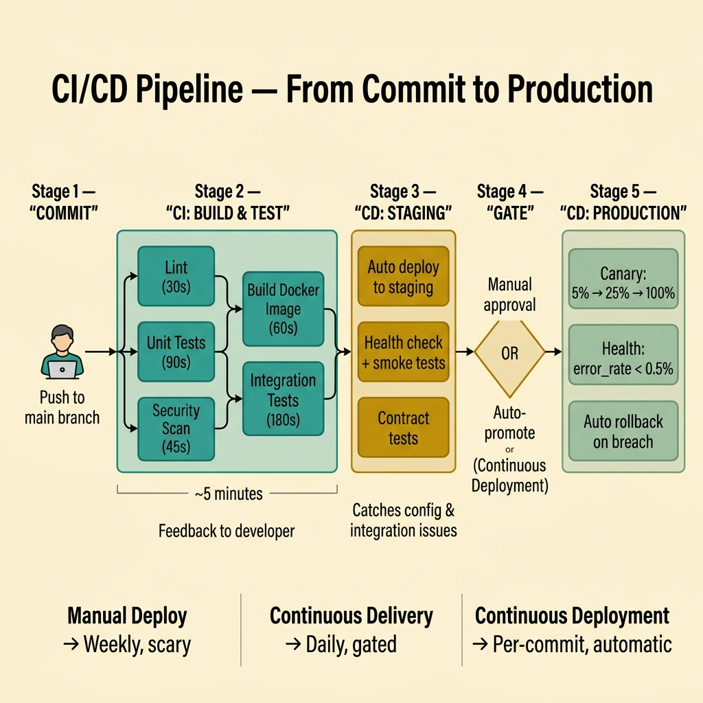
CI/CD không chỉ là việc cấu hình Jenkins hay Github Actions. Điểm cốt lõi của CI/CD là Tốc độ phản hồi (Feedback Speed). Một pipeline mất 1 tiếng để chạy và liên tục trả về kết quả lỗi giả (flaky tests) thực chất đang kìm hãm tốc độ của đội ngũ và phá hỏng niềm tin vào quy trình tự động.
Các ví dụ thực chiến
Ví dụ 5.1: Xây dựng CI Pipeline song song siêu tốc dưới 10 phút cho Microservice Go
Mỗi khi tạo PR, lập trình viên phải đợi hơn 40 phút để Github Actions chạy tuần tự từ bước Linting, Unit test, Security Scan đến Build. Hậu quả là lập trình viên thường xuyên context-switch sang việc khác, PR bị dồn ứ và tốc độ phát triển bị trì trệ nghiêm trọng.
Cấu hình Github Actions Pipeline chạy song song (parallel execution), tận dụng bộ nhớ đệm (caching) thông minh để tối ưu hóa thời gian xuống dưới 5 phút:
name: Fast CI Pipeline
on:
pull_request:
branches: [ main ]
jobs:
# Chạy song song các bước kiểm tra độc lập
lint-and-scan:
runs-on: ubuntu-latest
steps:
- uses: actions/checkout@v3
- name: Set up Go
uses: actions/setup-go@v4
with:
go-version: '1.21'
cache: true # Tự động cache dependencies
- name: Run Linter
run: |
curl -sSfL https://raw.githubusercontent.com/golangci/golangci-lint/master/install.sh | sh -s -- -b $(go env GOPATH)/bin v1.54.2
golangci-lint run ./...
unit-tests:
runs-on: ubuntu-latest
steps:
- uses: actions/checkout@v3
- name: Set up Go
uses: actions/setup-go@v4
with:
go-version: '1.21'
cache: true
- name: Run Unit Tests with Race Detector
run: go test -v -race -covermode=atomic ./...
# Chỉ chạy bước build nếu toàn bộ các kiểm tra trên thành công
build-docker:
needs: [lint-and-scan, unit-tests]
runs-on: ubuntu-latest
steps:
- uses: actions/checkout@v3
- name: Build Docker Image
run: docker build -t app:${{ github.sha }} .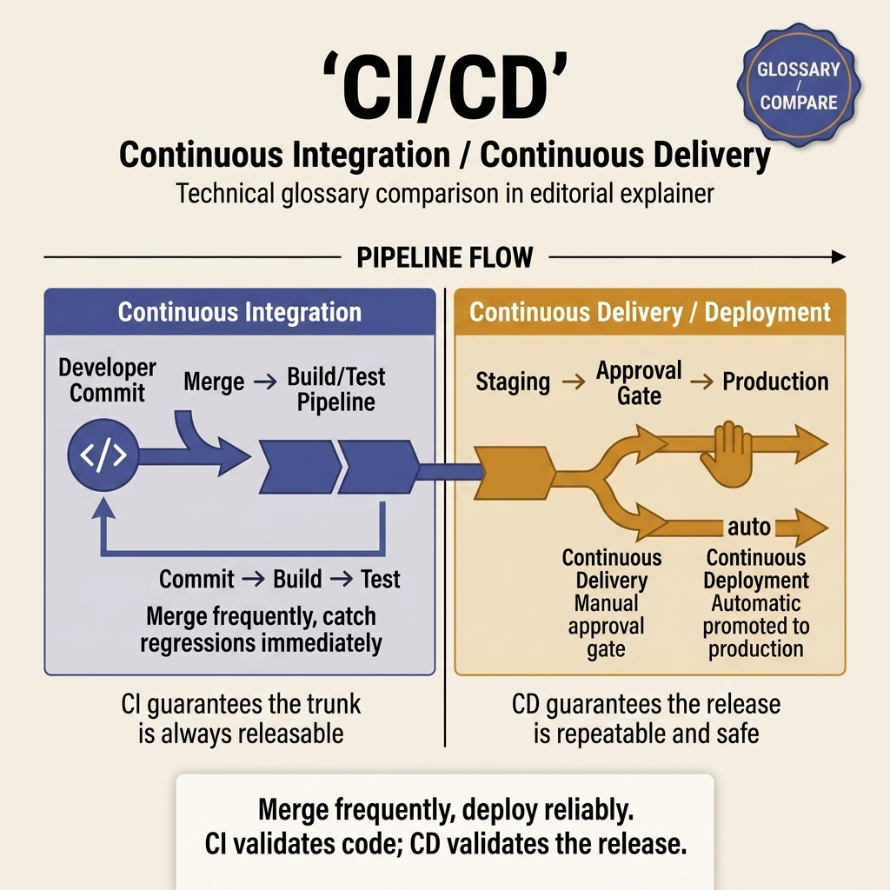
Kết luận: Tốc độ của CI Pipeline tỷ lệ thuận với tần suất lập trình viên tích hợp code. Bằng cách thiết lập chạy song song và bật cơ chế cache dependencies, bạn sẽ cải thiện đáng kể trải nghiệm của kỹ sư phát triển phần mềm.
Ví dụ 5.2: Triển khai chiến lược tự động rollback thông minh dựa trên Health Probes
Hệ thống tự động deploy phiên bản mới lên Production lúc 2 giờ sáng. Tuy nhiên, phiên bản này chứa lỗi Memory Leak khiến CPU máy chủ vọt lên 100% sau 15 phút chạy thực tế. Hệ thống sập hoàn toàn cho đến khi kỹ sư trực sự cố thức dậy lúc 3 giờ sáng để rollback bằng tay.
Sử dụng Kubernetes Liveness và Readiness Probes để giám sát sức khoẻ Pod liên tục, kết hợp với cơ chế Rollback tự động của ArgoCD nếu Pod mới không thể phục vụ:
apiVersion: apps/v1
kind: Deployment
metadata:
name: payment-api
spec:
replicas: 3
strategy:
type: RollingUpdate
rollingUpdate:
maxSurge: 1 # Tạo tối đa 1 Pod mới trước khi tắt Pod cũ
maxUnavailable: 0 # Đảm bảo luôn đủ số lượng Pod phục vụ khách
template:
spec:
containers:
- name: payment-container
image: payment-api:v2.1.0
# Readiness Probe: Đảm bảo Pod thực sự sẵn sàng nhận Traffic
readinessProbe:
httpGet:
path: /healthz/ready
port: 8080
initialDelaySeconds: 5
periodSeconds: 5
# Liveness Probe: Phát hiện nếu App bị treo cứng/Memory Leak để tự động khởi động lại
livenessProbe:
httpGet:
path: /healthz/live
port: 8080
initialDelaySeconds: 15
periodSeconds: 10| Chiến lược phát hành | Cơ chế hoạt động | Mức độ an toàn | Tốc độ rollback |
|---|---|---|---|
| Recreate | Tắt toàn bộ Pod cũ trước khi bật Pod mới. Có downtime. | Thấp | Chậm (phải đợi khởi động lại từ đầu) |
| Rolling Update | Thay thế dần từng Pod cũ bằng Pod mới một cách cuốn chiếu. | Trung bình | Tự động dừng lại nếu Pod mới fail Readiness Probe. |
| Blue/Green | Dựng song song 2 môi trường. Chuyển đổi 100% traffic lập tức. | Cao | Tức thì (< 1 giây bằng cách đổi hướng router). |
Kết luận: Một CD pipeline hoàn hảo không chỉ biết deploy code, mà phải biết tự động ứng phó khi code lỗi. Thiết lập Health Probes chuẩn xác giúp hệ thống tự động ngăn chặn mã lỗi lan tràn trên diện rộng.
Ví dụ 5.3: Cơ chế dập tắt Flaky Tests (Kiểm thử chập chờn) bằng vùng cách ly (Quarantine)
Một đội ngũ có bộ kiểm thử tự động gồm 2.000 test cases. Tuy nhiên, có khoảng 15 test cases liên quan đến kết nối mạng bị chập chờn (Flaky tests - lúc pass lúc fail không rõ nguyên nhân). Hậu quả là CI Pipeline liên tục báo lỗi đỏ dù lập trình viên không viết sai code. Dev bắt đầu bỏ qua cảnh báo lỗi của CI, coi đó là "nhiễu" và merge code bừa bãi.
Thiết lập cơ chế tự động cách ly phần mềm kiểm thử chập chờn (Test Quarantine Framework):
- Phát hiện tự động: Nếu một test case bị fail trong lần chạy đầu tiên, CI sẽ tự động chạy lại riêng test case đó 3 lần liên tiếp. Nếu nó pass ở 1 trong các lần chạy lại ➔ Gắn nhãn
[FLAKY]. - Vùng cách ly (Quarantine): Tự động di chuyển các Test case có nhãn
[FLAKY]ra khỏi Pipeline chặn PR. Nhóm test này vẫn được chạy vào ban đêm để thu thập dữ liệu nhưng kết quả của nó không được làm gián đoạn dòng chảy code của ban ngày. - Governance SLA: Đội ngũ kỹ sư sở hữu Test case chập chờn có thời hạn đúng 7 ngày để sửa chữa triệt để lỗi. Quá thời hạn này, Test case đó sẽ bị xoá vĩnh viễn khỏi hệ thống để giữ gìn sự sạch sẽ của Pipeline.
quarantine_dashboard:
pipeline_health_status: "99.2% green pass rate (Tăng từ 78%)"
quarantined_tests:
- test_id: "Test_Payment_Timeout_Gateway"
detected_on: "2026-05-28"
owner: "Team_Billing"
days_left_to_fix: 3
- test_id: "Test_User_Session_Race_Condition"
detected_on: "2026-05-24"
owner: "Team_Auth"
days_left_to_fix: 0 # QUÁ HẠN - Sẽ bị tự động xoá khỏi master
impact: "Lập trình viên tin tưởng hoàn toàn vào nút Xanh của CI. Thời gian PR được merge giảm xuống dưới 15 phút."Kết luận: Bộ kiểm thử chập chờn (Flaky tests) nguy hiểm hơn là không có kiểm thử tự động, vì nó phá hỏng niềm tin và kỷ luật của đội ngũ. Cần đối xử với Pipeline tin cậy như một SLO dịch vụ nghiêm khắc.
Git Branching Strategy
GitFlow là một mô hình quản lý nhánh Git có cấu trúc chặt chẽ, được thiết kế đặc biệt cho các dự án có chu kỳ phát hành sản phẩm rõ ràng (scheduled release cadence). Mô hình này chia tách rõ rệt vòng đời của các tính năng mới (feature/*), chuẩn bị phát hành (release/*), vá lỗi khẩn cấp trên Production (hotfix/*) và lưu trữ hai lịch sử dài hạn song song là main (luôn stable để ship) và develop (nơi tích hợp liên tục).
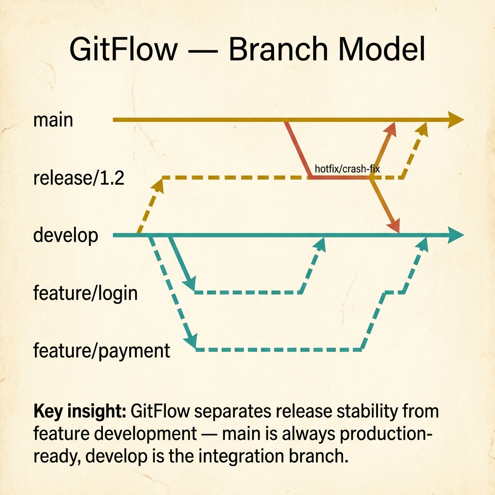
GitFlow không phải là cách làm duy nhất và cũng không phải là mô hình tốt nhất cho mọi trường hợp. Với các đội ngũ phát triển SaaS hiện đại deploy nhiều lần một ngày, GitFlow tạo ra gánh nặng quản lý nhánh cực lớn. Trong các ngữ cảnh đó, Trunk-Based Development (merge trực tiếp vào main kết hợp Feature Flags) là lựa chọn tối ưu hơn.
Định nghĩa các làn nhánh tiêu chuẩn
develop
Nhánh tích hợp chính. Toàn bộ code phát triển tính năng mới đều merge về đây.
release/*
Nhánh đóng băng tính năng để ổn định, chỉ sửa lỗi kiểm thử (hardening), chuẩn bị mang lên Production.
hotfix/*
Nhánh khẩn cấp tách ra từ main để sửa lỗi nghiêm trọng trên Production, sau đó bắt buộc phải merge ngược lại cả main và develop.
Các ví dụ thực chiến
Ví dụ 6.1: Bản đồ định tuyến nhánh đúng đắn cho các mục tiêu thay đổi khác nhau
Lập trình viên mới vào dự án không nắm rõ quy tắc phân nhánh. Khi phát hiện một lỗi nghiêm trọng trên Production, bạn đã tự tạo nhánh feature/fix-payment-bug từ nhánh develop, sửa lỗi rồi gửi PR thẳng vào nhánh main. Hậu quả là kéo theo hàng loạt tính năng chưa hoàn thiện từ develop lên Production, gây sập hệ thống diện rộng.
Huấn luyện và thiết lập quy trình phân nhánh chuẩn chỉ (Branch Intent Routing):
- Feature (Tính năng mới): Nhánh gốc:
develop➔ Nhánh đích merge về:develop. Tên:feature/ten-tinh-nang. - Hotfix (Vá lỗi khẩn cấp): Nhánh gốc:
main➔ Nhánh đích merge về: cả main và develop. Tên:hotfix/ten-loi-va. - Release (Đóng gói phát hành): Nhánh gốc:
develop➔ Nhánh đích merge về: cả main và develop. Tên:release/vX.Y.Z.
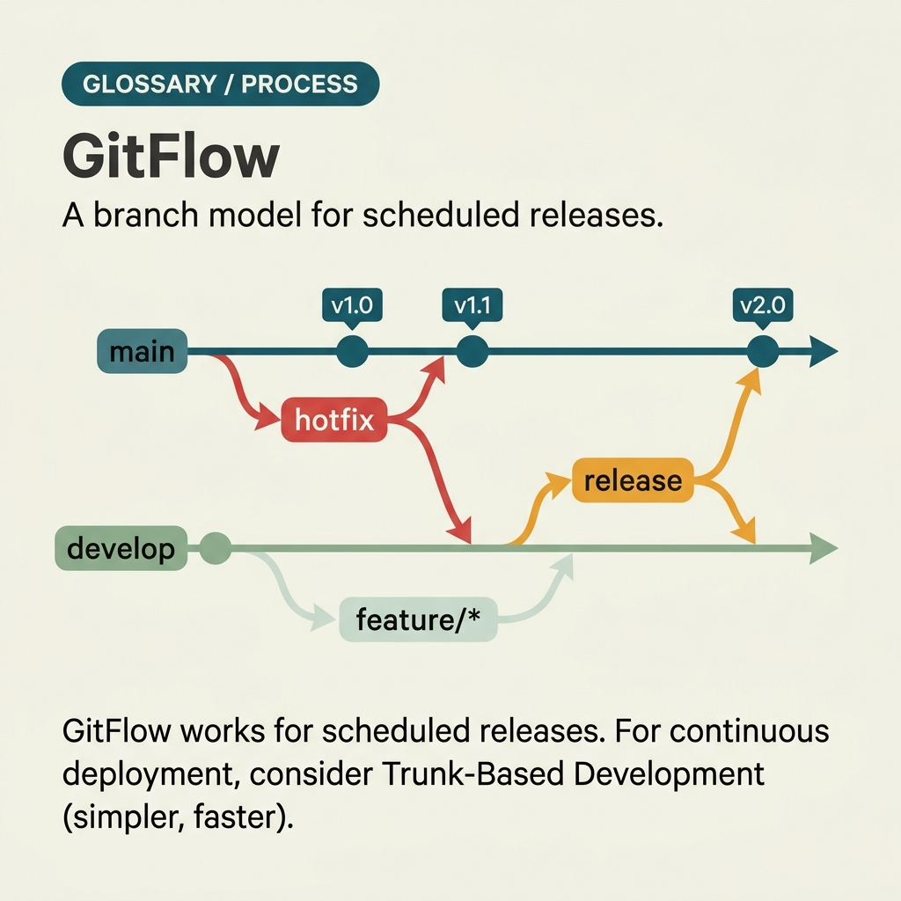
Kết luận: Bản chất của GitFlow là kỷ luật định tuyến nhánh. Tách biệt rõ ràng các làn đường di chuyển của code giúp triệt tiêu hoàn toàn rủi ro rò rỉ mã nguồn chưa hoàn tất ra môi trường Production.
Ví dụ 6.2: Thiết lập quy tắc đóng băng tính năng (Feature Freeze) trên nhánh Release
Trong thời gian chuẩn bị phát hành phiên bản 2.0.0, đội ngũ kỹ sư tạo nhánh release/v2.0.0 để kiểm thử và vá lỗi. Tuy nhiên, PM liên tục yêu cầu: "Tiện tay nhét thêm tính năng nhỏ này vào luôn đi em". Dev đồng ý viết thêm code mới trực tiếp trên nhánh release, dẫn đến việc phát sinh thêm bug mới và trễ hạn phát hành mất 2 tuần.
Thiết lập chính sách đóng băng phạm vi (Scope Lock Policy) cứng rắn trên các nhánh Release:
release_branch_rules:
branch_pattern: "release/*"
allowed_activities:
- "Sửa các lỗi nghiêm trọng (blocker/critical) được phát hiện bởi QA"
- "Cập nhật tài liệu kỹ thuật, hướng dẫn phát hành (Release Notes)"
- "Thay đổi file cấu hình môi trường chuẩn bị Golive"
forbidden_activities:
- "Viết thêm bất kỳ dòng code tính năng mới nào (New Feature Scope)"
- "Tiến hành tái cấu trúc mã nguồn diện rộng (Large Refactoring)"
exit_conditions:
- "Không còn lỗi nghiêm trọng chưa được giải quyết trên Jira"
- "Nhánh release được merge hoàn tất vào main (để ship) và develop (để cập nhật dòng code)"| Hoạt động | Được cho phép trên nhánh Release? | Lý do kỹ thuật |
|---|---|---|
| Vá lỗi bảo mật khẩn cấp | CÓ | Đảm bảo phiên bản Golive sạch lỗi và an toàn nhất. |
| Cập nhật số phiên bản (v2.0.0) | CÓ | Tác vụ chuẩn bị phát hành tiêu chuẩn. |
| Cải tiến UI nâng cao trải nghiệm | KHÔNG | Rủi ro phá hỏng các luồng kiểm thử cũ là cực cao. Hãy đưa vào develop cho phiên bản sau. |
Kết luận: Nhánh Release chỉ là một vùng đệm để làm cứng (hardening) sản phẩm, không phải là nơi tiếp tục sáng tạo. Kỷ luật khoá scope nhánh Release là yếu tố tiên quyết để đảm bảo ngày Golive chính xác.
Ví dụ 6.3: Giải quyết triệt để vấn đề "Quên Back-Merge Hotfix" gây tái phát bug cũ
Một bug nghiêm trọng xảy ra trên Production. Dev tạo nhanh nhánh hotfix/fix-checkout-crash, sửa lỗi, merge vào main và deploy golive ngay lập tức. Tuy nhiên, do vội vã, dev quên merge ngược lại nhánh develop. Ba tuần sau, khi phiên bản release mới (được đóng gói từ develop) Golive, lỗi crash cũ đột ngột tái xuất hiện khiến khách hàng giận dữ vô cùng.
Tự động hoá quy trình kiểm tra và ép buộc thực thi quy tắc Back-Merge thông qua Github Actions Pipeline:
name: Enforce Hotfix Back-Merge
on:
pull_request:
types: [closed]
branches: [main]
jobs:
back-merge:
if: github.event.pull_request.merged == true && startsWith(github.event.pull_request.head.ref, 'hotfix/')
runs-on: ubuntu-latest
steps:
- uses: actions/checkout@v3
with:
fetch-depth: 0 # Lấy toàn bộ lịch sử Git
- name: Set up Git User
run: |
git config --global user.name "SRE Auto Bot"
git config --global user.email "sre-bot@company.com"
- name: Attempt Auto Back-Merge to Develop
run: |
git checkout develop
git merge origin/${{ github.event.pull_request.head.ref }} --no-ff -m "chore: Auto back-merge hotfix to develop"
git push origin develop
- name: Send Slack Alert if Conflict Occurs
if: failure()
run: |
curl -X POST -H 'Content-type: application/json' \
--data '{"text":"🚨 HOTFIX BACK-MERGE FAILED! Merge conflict occurred between hotfix and develop. Manual merge required immediately!"}' \
${{ secrets.SLACK_WEBHOOK_URL }}| Trường hợp kiểm tra | Nhánh nguồn | Nhánh đích bắt buộc | Rủi ro nếu quên |
|---|---|---|---|
| Hotfix (Vá lỗi khẩn cấp) | hotfix/* |
Cả main VÀ develop |
Bug cũ tái phát khi phát hành phiên bản mới tiếp theo. |
| Release (Hardening) | release/* |
Cả main VÀ develop |
develop bị trôi xa khỏi main, gây conflict khổng lồ khi merge đợt sau. |
Kết luận: Con người luôn có thể mắc sai lầm do quên sót dưới áp lực thời gian của sự cố. Chỉ có tự động hoá bằng máy móc mới có thể đảm bảo 100% tính kỷ luật của quy trình vận hành phần mềm ở quy mô lớn.
Tài liệu tham khảo chuyên sâu
Các tài liệu và cuốn sách dưới đây là những nguồn tri thức kinh điển, định hình nên các quy chuẩn của kỹ nghệ phần mềm hiện đại:
Tuyên ngôn Agile (Agile Manifesto) — 2001
agilemanifesto.orgNguồn gốc triết lý của toàn bộ các khung làm việc linh hoạt hiện đại.
Hướng dẫn Scrum Chính thức (The Scrum Guide) — Ken Schwaber & Jeff Sutherland
scrumguides.orgVăn bản định nghĩa canonical và chuẩn mực nhất về khung làm việc Scrum.
Dự án Phoenix (The Phoenix Project) — Gene Kim, Kevin Behr & George Spafford
itrevolution.com/the-phoenix-projectCuốn tiểu thuyết kinh điển giới thiệu ba cách đi của triết lý DevOps vào doanh nghiệp.
Sách SRE Google (Site Reliability Engineering) — Betsy Beyer, Chris Jones, Jennifer Petoff & Niall Richard Murphy
sre.google/sre-bookKinh thánh về SRE, định hình chi tiết cách Google thiết lập SLOs và quản trị Error Budgets.
Chuyển giao liên tục (Continuous Delivery) — Jez Humble & David Farley
continuousdelivery.comCuốn sách nền tảng đầu tiên định nghĩa toàn diện về Pipelines và tự động hoá phát hành phần mềm.
Mô hình phân nhánh Git thành công (A successful Git branching model) — Vincent Driessen
nvie.com/posts/a-successful-git-branching-modelBài viết gốc khai sinh ra mô hình GitFlow kinh điển toàn cầu.
"Quy trình sinh ra để giải phóng sức sáng tạo của lập trình viên chứ không phải để kìm hãm nó. Hãy chọn đúng nhịp điệu, tự động hoá mọi tác vụ thủ công và quản trị bằng số liệu định lượng."
Chọn đúng làn đường · Tự động hoá tuyệt đối · Đo lường bằng dữ liệu thực tế.